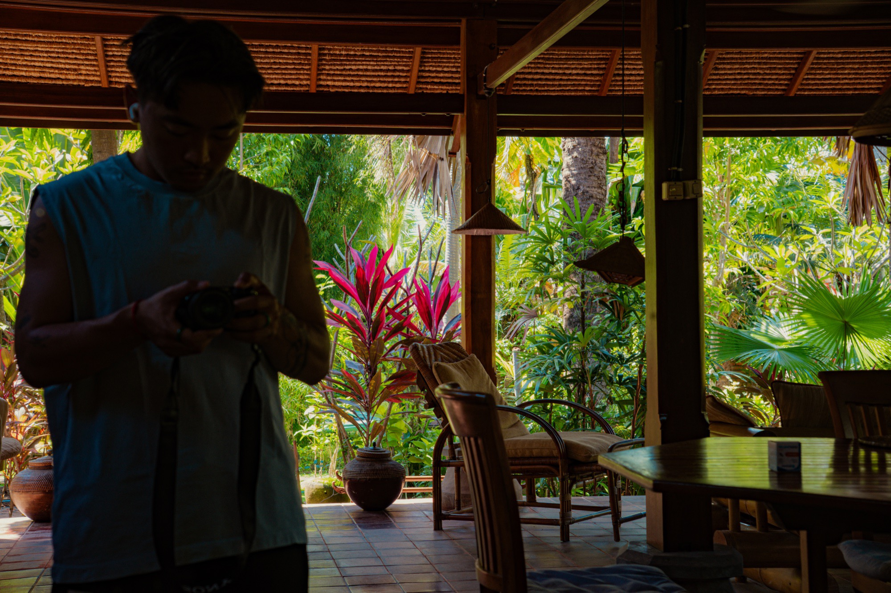

Photographe — Street & Voyage
Capturer l'instant juste, là où la rue et le voyage se rencontrent.
Je photographie ce qui se passe entre deux moments : un regard, une lumière qui tombe au coin d'une ruelle, le rythme d'une ville inconnue. Des Houches à Bali, d'Istanbul au Japon, je cherche la même chose — une émotion vraie, sans mise en scène.
Ce site rassemble une sélection de mes séries, organisées par destination. Prends le temps, laisse les images respirer.

Quentin, en repérageÀ propos
J'ai commencé comme presque tout le monde : au téléphone, des cadrages approximatifs, mais déjà une obsession, garder une trace de l'instant. Ma famille, mes amis, un paysage qui m'arrête. Le déclic est venu en février 2025, à mon premier voyage au Japon : je me suis mis à photographier chaque jour, dès qu'une scène m'attrapait. En avril, j'achetais mon premier vrai boîtier, un Sony A6400. Je shoote dessus depuis, et je n'ai pas lâché.
Je suis autodidacte, de la prise de vue à la retouche. Je photographie surtout en voyage, moins au quotidien : j'ai besoin de vivre l'instant autant que de le capturer. Ce que je cherche, c'est un feeling, une scène qui dégage quelque chose quand je la revois.
Depuis que j'ai cet appareil, il m'a suivi des Aiguillettes des Houches à Bali, d'Istanbul à Amsterdam, du Japon à la Chine. Voyager m'ouvre l'esprit et le cœur : d'autres cultures, d'autres visages, d'autres sourires, d'autres façons de vivre, loin de ma zone de confort. C'est ça que j'essaie de ramener dans mes images. Si, en parcourant ce site, tu ressens quelque chose, même fugace, alors elles ont fait leur travail. Et si une série te parle, écris-moi.